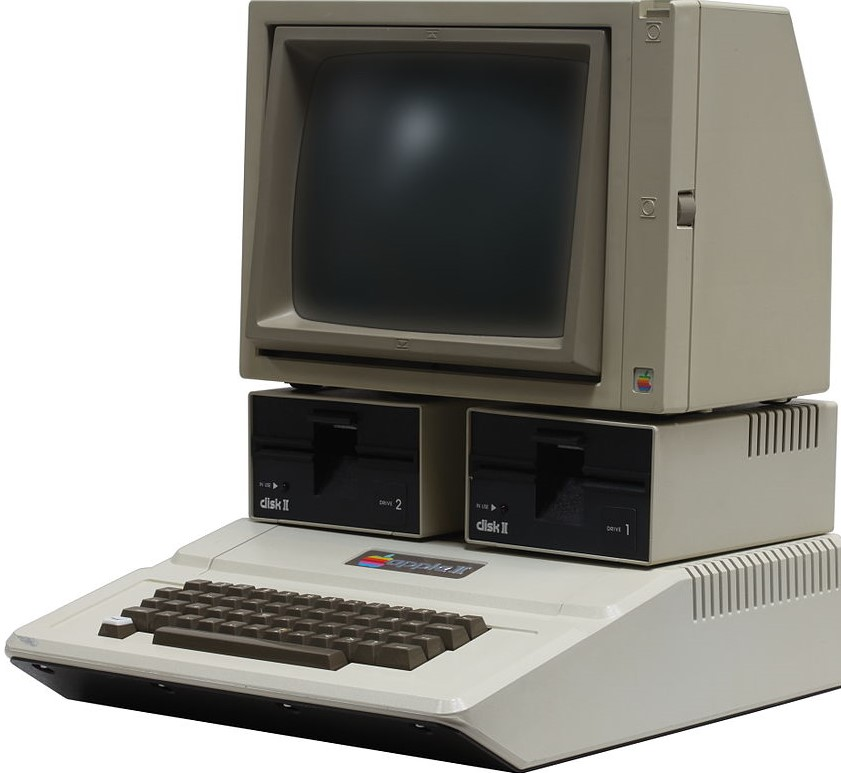
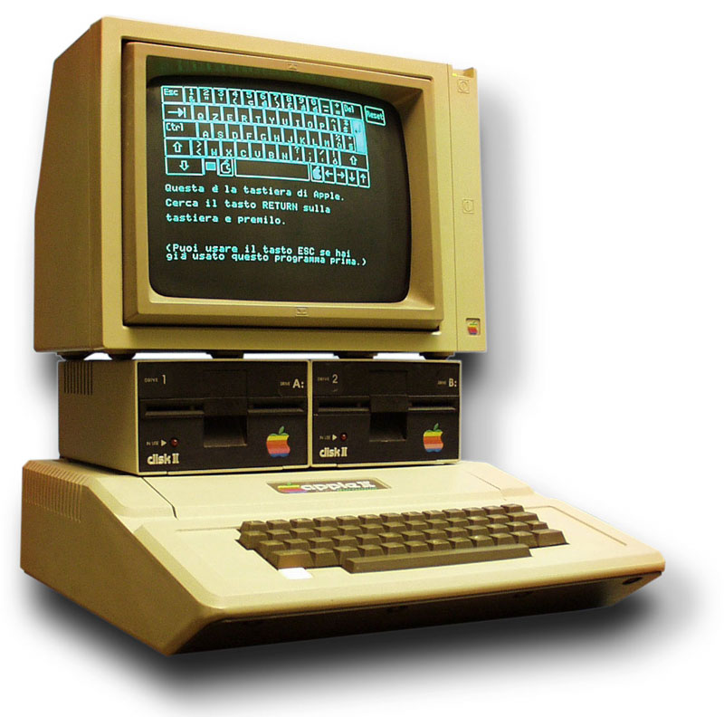

Apple II
Taking advantage of the way the 6502 processor accesses memory. Video generation circuitry memory access on the otherwise unused phase avoids memory contention issues and interruptions of the video stream.

Apple II +
Includes the Applesoft BASIC programming language in ROM. Supports floating-point arithmetic. Improved graphics and disk-booting support in the ROM. Full 48k of memory already installed.